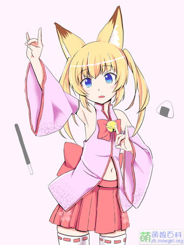

世知辛いのじゃー~~!

通稱"虛擬口癖蘿莉狐娘YouTuber大叔"(バーチャルのじゃロリ狐娘Youtuberおじさん).
"Nekomasu"(ねこます)全稱"貓耳Master"(ねこみみマスター). 其前個人頻道"獸耳王國國營放送"(けもみみおーこく国営放送)內容以蘿莉形象, 大叔聲音的反差萌為特點.
Nekomasu並非完全的虛擬YouTuber. 雖自稱虛擬YouTuber, 但實際所有動畫形象背後均確定是Nekomasu本人進行活動.
在2017年11月8日正式以虛擬YouTuber身份開始活動. 同年12月28日頻道訂閱數突破10萬.
Nekomasu使用多個虛擬形象進行活動, 其主要使用的形象是蘿莉狐娘"Mikoko"(みここ)與貓耳魔女"Nekoma"(ねこま), 其設定, 原畫, 建模以及視頻的錄製,
配音均由Nekomasu本人完成.
在以虛擬YouTuber身份開始活動之前, Nekomasu亦創作了多名角色.
"Mikoko"(みここ)是Nekomasu作為虛擬YouTuber活動時的主要形象. 形象為雙馬尾蘿莉狐娘. 在使用此形象時,
Nekomasu自稱"虛擬口癖蘿莉狐娘YouTuber大叔"(バーチャルのじゃロリ狐娘Youtuberおじさん), 簡稱"のじゃおじ", 並在句尾附上"のじゃ"的口癖.
此模型最初是為VRChat設計的Unity模型, 先前已在Bowlroll上公布, 2018年1月3日有人將模型轉換為MMD模型發布. 據Nekomasu本人稱,
設計獸耳要素是因為"從DNA里透露出來的可愛", "只是想這麼做而已".
服裝的巫女要素靈感來自與VRChat中的人氣模型:"UTAU中的櫻歌Miko". 髮色來源於狐狸的體色, 其餘方面並未過多進行說明.
"Nekoma"(ねこま)是Nekomasu作為虛擬YouTuber活動時的另外一個形象. 形象為穿着有一側蝙蝠翅膀與貓耳的兜帽衫的紅髮少女. 在使用此形象時,
Nekomasu自稱"虛擬貓耳魔女YouTuber大叔"(バーチャル猫耳魔女っ娘youtuberおじさん), 簡稱"猫耳魔女おじ", 並在句尾附上"のにゃ"的口癖.
據Nekomasu本人說, 此模型製作時期早於現在經常使用的Mikoko模型, 具體日期約為2017年10月25日, 是為VRChat萬聖節模型設計大賽而創作的最後落選了.
Nekomasu在2018年1月5日開始使用此模型進行視頻活動, 其模型在1月1日已提前在官網上配信.